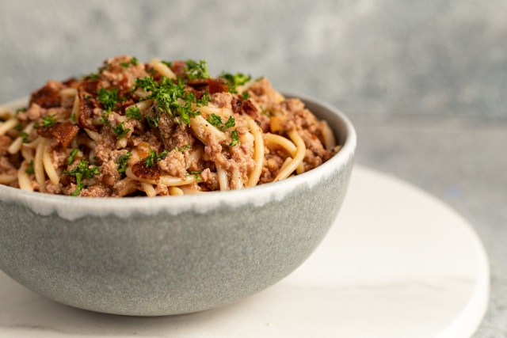

Tuna Pasta Recipe
Home

Photo by
Lissete Laverde
on
Unsplash
Description
Tuna pasta is such a great dinner to make when you don’t have much in the
cupboard. For canned tuna recipe cynics out there – it’s time to take a
leap of faith! This is seriously tasty, very economical and super fast –
it comes together in 15 minutes flat, from start to finish.
Ingredients
-
Canned tuna: Tuna in oil is the go here! We use the oil
from the can of tuna for the sauce to sauté the garlic until golden. No
tuna in oil? It’s ok! Just use olive oil instead and tip the liquid from
the can of tuna into the sauce.
-
Anchovies: Anchovies make everything taste better!
Finely minced then sautéed in oil so they dissolve and lose the
fishiness, just leaving great savouriness into the dish. I always have a
jar in the fridge. Always! Anchovy paste – use 1 teaspoon.
-
Capers: For a pop of fresh tang! I like to use baby
capers. If you only have large ones, give them a rough chop. No capers?
Chop pickles instead!
-
Lemon: Juice for sour and zest for lemon flavour. It
really does lift the dish so I hope you have it! Lemon is a staple
ingredient I always have on hand. But if you don’t, this dish is still
worth making. Add a dash of vinegar instead.
-
Chilli flakes / red pepper flakes: For a hum of warmth.
This isn’t a spicy pasta. Substitute with finely chopped fresh chilli or
a smidge of chilli paste or sauce (add this at the end). Or leave it out
for no spiciness at all.
-
Cook the pancakes: Brush the skillet with melted butter
for crispy edges (you can skip this if using a good nonstick pan). Scoop
the batter onto the skillet using a 1/4 cup measure or a large cookie
scoop, then gently spread each pancake into a 4-inch circle.
- Parsley: For freshness. Not critical.
Steps
-
Cook the pasta in salted water per packet directions
minus 1 minute. The pasta will be slightly under al dente (ie underdone)
but that’s ok. The pasta will finish cooking with the sauce, during
which time it will absorb the tasty flavours of the sauce!
-
Reserve pasta cooking water- Just before draining,
scoop out 1 cup of cooking water then drain the pasta.
Why?Because we will be using this to make the sauce for the
pasta. The starch in the pasta cooking water will react with the oil in
the sauce to make it thicken so it clings to the pasta strands instead
of remaining as a watery sauce at the bottom of the pan.
-
Tuna oil- Pour the oil from the tuna can(s) into the
same pot and heat over medium heat.
-
Sauté garlic, anchovies and chilli flakes for 1 minute.
-
Pasta and water- Add the pasta, capers and 1/3 cup of
reserved pasta water. Toss using 2 spatulas for 2 minutes. During this
step, the oil and the starchy pasta cooking water will thicken into a
sauce that clings to the pasta. Also during this step the pasta will
finish cooking from just under al dente to al dente.
If the pasta is still too firm for your taste, add more of the pasta
cooking water and keep cooking the pasta.
-
Add tuna - Turn off the heat. Add tuna, parsley, lemon
zest, juice, salt and pepper. Toss gently so the tuna stays in chunks
and doesn’t crumble into tiny little bits. Then serve immediately!